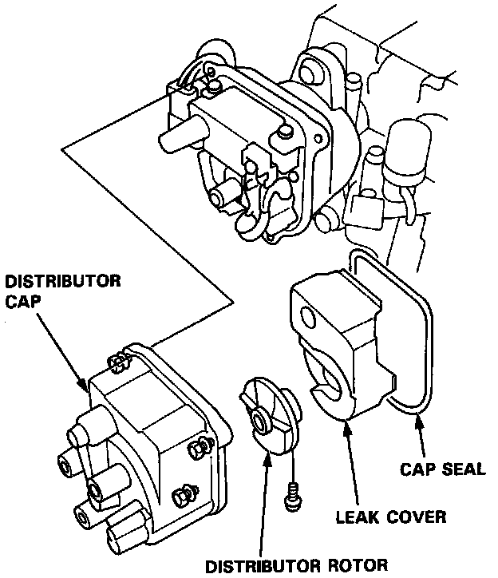
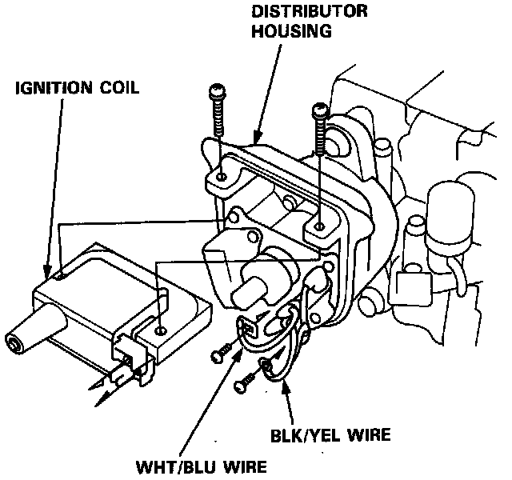

Ignition Coil: Service and Repair
Distributor Cap & Rotor:

REMOVAL
1. With ignition off, remove the distributor cap, rotor, and cap seal, then remove the inner cover.
2. Remove the mounting screws for the Primary wires and disconnect the BLK/YEL and WHT/BLU wires from the coil.
Ignition Coil Replacement:

3. Remove the coil mounting screws and slide the ignition coil out of the distributor housing.
INSTALLATION
1. Install new coil and secure with mounting screws.
2. Connect the BLK/YEL and WHT/BLU wires to the coil.
3. Install the inner cover, cap seal, rotor, and distributor cap.